Making compliance-driven question building easier for admins
RoleDesign owner
Timeline3 weeks
TeamProduct, Engineering, Design
ShippedQ4 2025
OUTCOME
{{ o.v }}{{ o.l }}
01 / THE GAP
A failed check closed out exactly like a passed one.
{{ g.k }}{{ g.v }}
02 / RESEARCH
Managers found out hours too late.
{{ m.n }} · {{ m.t }}{{ m.i }}
What reframed the problem
We assumedFailures weren’t being caught.
FINDING #1They were caught. Nobody was told.
The system put the onus on people. Associates had to notify managers outside the app, or managers had to keep checking every submission themselves. Either way, food safety depended on someone remembering. So the fix had to live inside the question, at the moment it fails.
FINDING #2 · NO QUESTION REPOSITORYEvery checklist was built from scratch.
BeforeAdmins typed in each question by hand, even if it already existed in another checklist.
CostSlow to build, and the same check was worded differently from one location to the next.
What I designedA questions repository. Every saved question goes into it, and admins pull from it while building a checklist.
03 / PROCESS
Defining what a question can do.
Mapping the question types
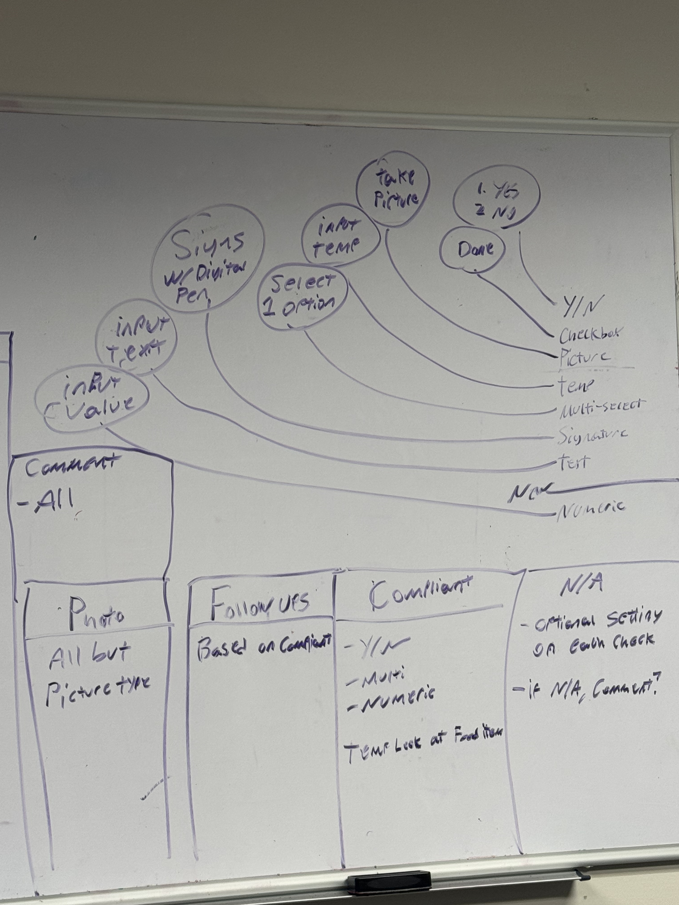
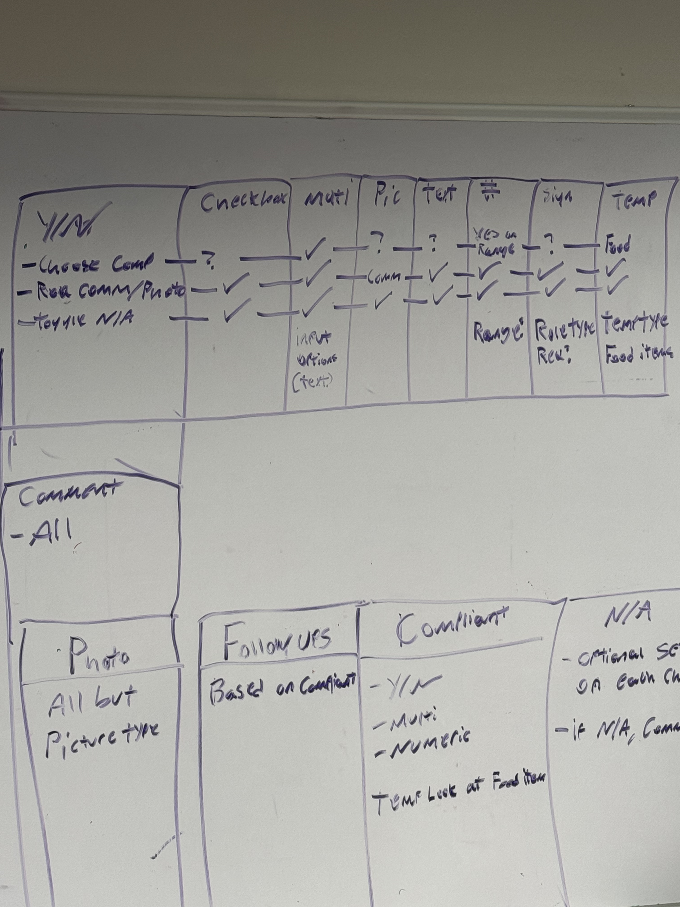
Every type, every setting.I mapped each answer type to how it’s completed in the field, then to which settings it supports: compliance, comments, photos, N/A. The gaps on the board became the rules in the builder.Triggers were capped at four after interviews with 3 expert admins who’d built checklists for 5+ years.
Directions we tried
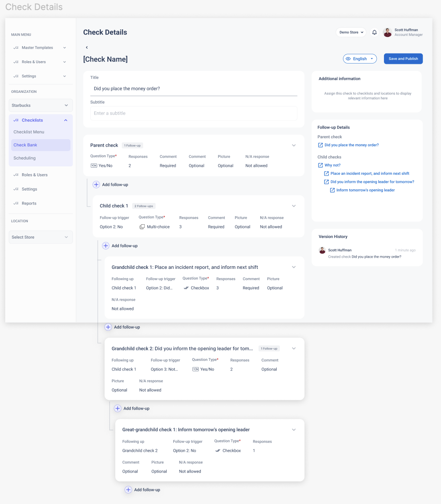
AStacked cardsTested · dropped
Everything on one long page. In testing there was no focused space to work in, and too much happening at once raised cognitive load.
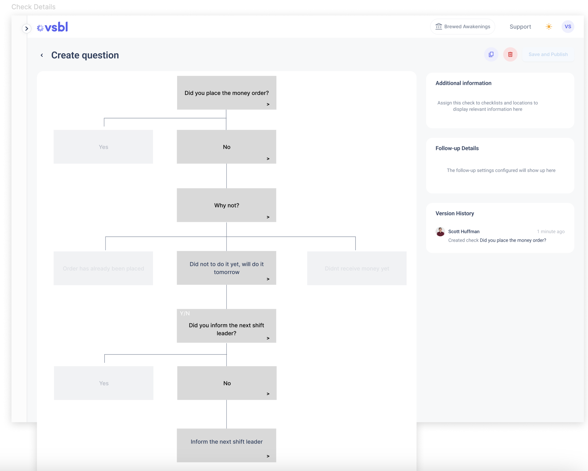
BFlowchartCut before testing
Intuitive, but our Angular stack couldn’t support a full-structure view. Building it would have delayed the release by months.
04 / SOLUTION
Configure the corrective action with the question.
* Screens are lightly recreated. The originals are under NDA, but the structure and interactions are true to what shipped.
{{ d.n }}{{ d.t }}{{ d.v }}
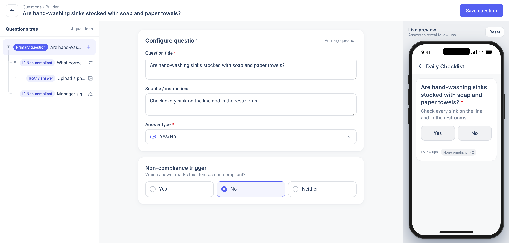
The builderStructure, configuration and outcome in one view. Admins see what the associate will see while they build it.
Admin · building a question
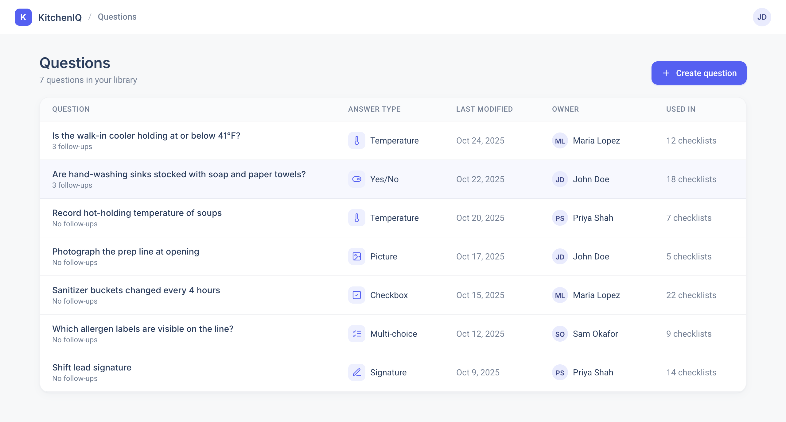
01Questions repository
Every saved question lands here. Admins pull from it while building a checklist, instead of retyping it.
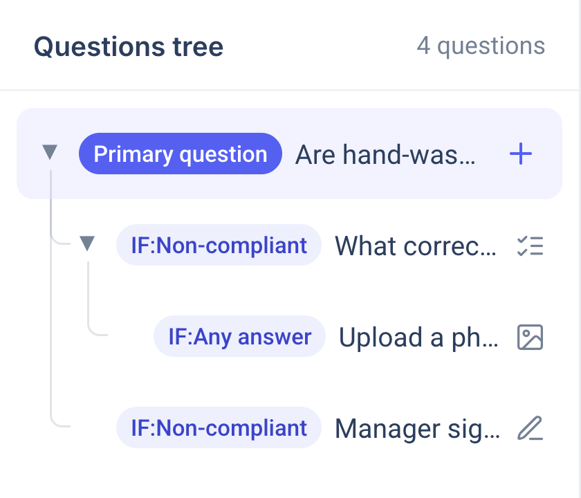
02Questions tree
Follow-ups nest under their parent, labelled with the condition that fires them.
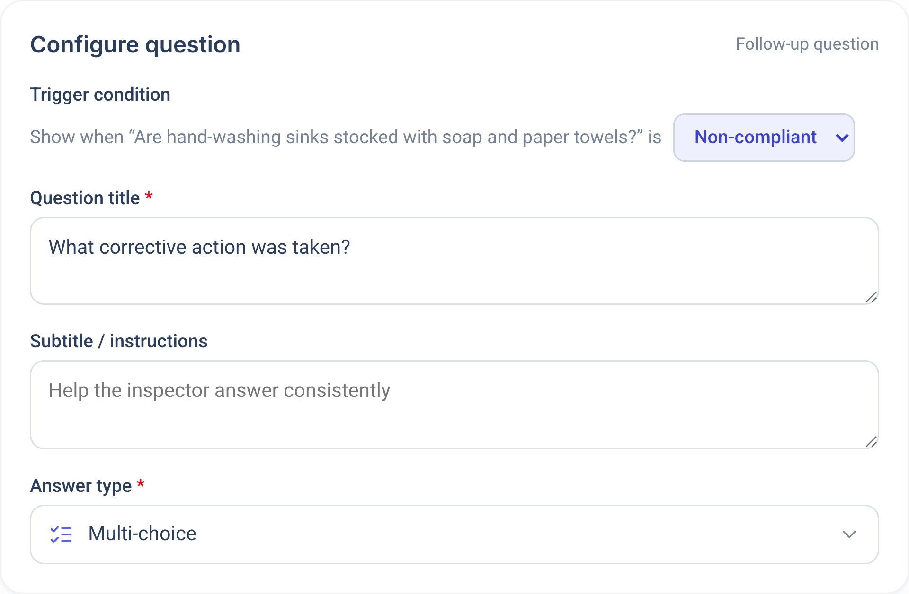
03Trigger conditions
Choose when a follow-up shows: completed, compliant, non-compliant, or a specific answer.
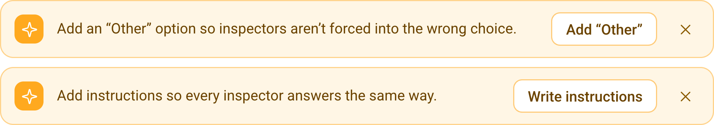
04Smart suggestionsConcept
Prompts admins to add what’s missing, like an “Other” option or instructions.
Associate · completing a checklistDESIGNED BY A COLLEAGUE, INFORMED BY MY WORK
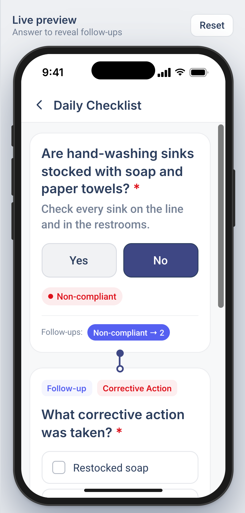
05Non-compliance flag
A failing answer is flagged, and its follow-ups appear right away.
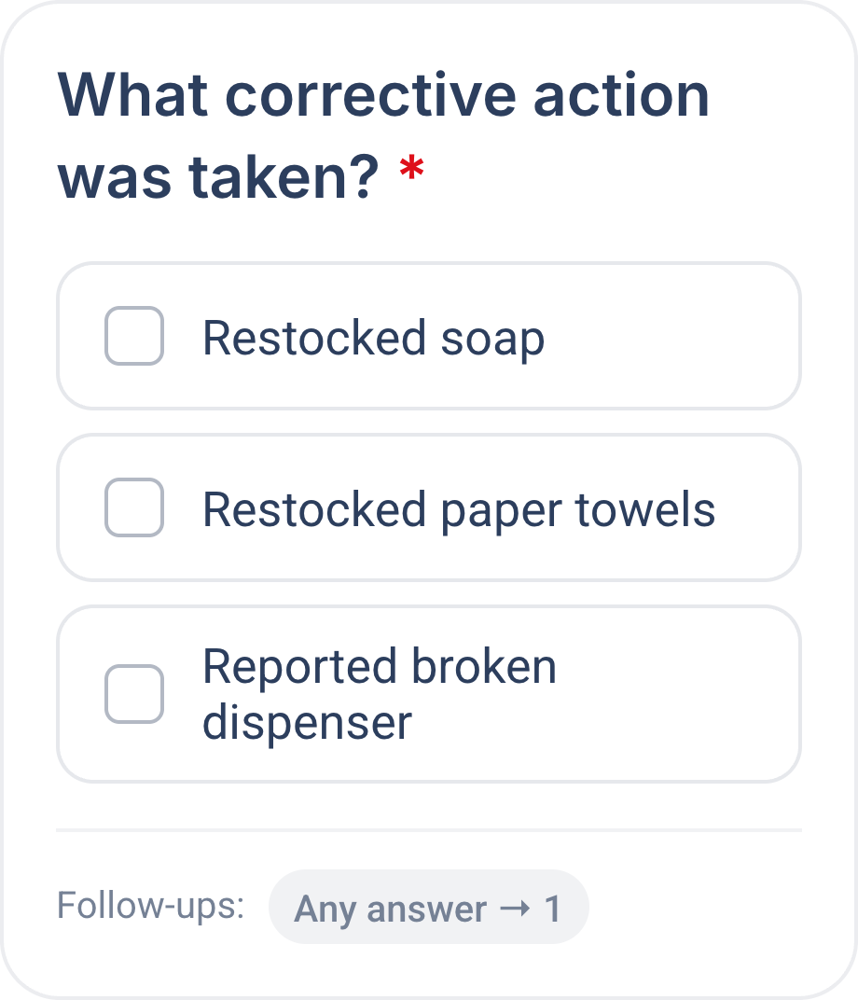
06Corrective action
Associates log what they fixed. A photo follow-up adds proof.